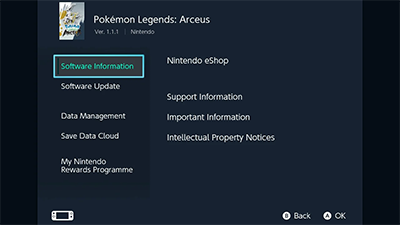
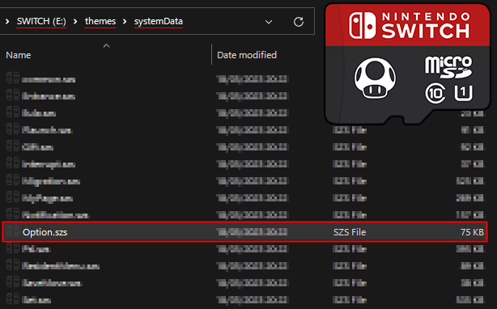
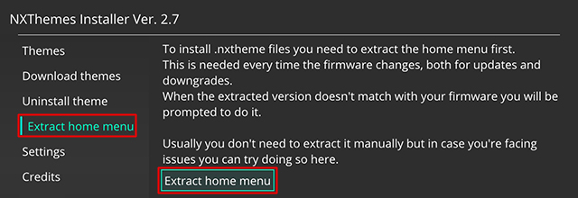
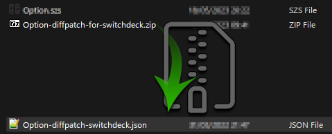
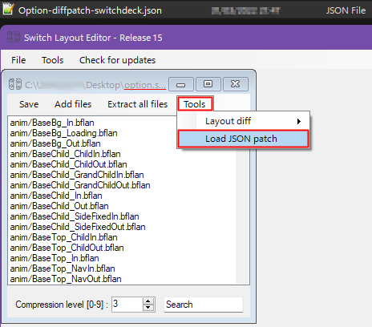
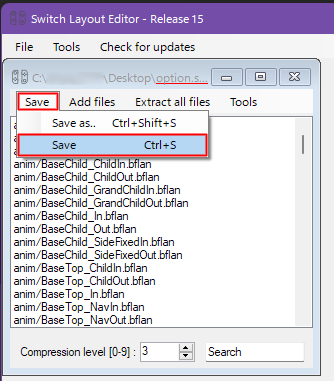

DiffPatching Option.szs
This guide is mainly for Diffpatching option.szs to give my switchdeck theme a better overall asthetic look and feel.
Option.szs has to be manually patched in switchlayouteditor
the patched file is then copied to SDMC:/atmosphere/contents/0100000001000/romfs/lyt with the other szs files
It's a little more advanced but not impossible, this guide assumes you have already installed themes and extracted your menu files already
| Unpatched option.szs looks un themed | This is with the patched option.szs |
|---|---|
 |
 |
Locate your version of Option.szs on your switch: sdmc:/themes/systemData/

Make a copy of Option.szs to your desktop & download the diffpatch
Option.szs missing?
If the szs is missing you can try extracting the menu files again in NXThemes Installer
open NXThemes > Extract home menu > Click Extract home menu

Download Option-diffpatch-for-switchdeck.zip

extract the diff patch

Open switchlayouteditor and drag option.szs into the application

once option.szs is open a smaller window will open, we only need to load our diffpatch and not actually edit anything here.
Click Tools > Load JSON patch

locate the diffpatch on your desktop and open it:

once it's loaded you will get a pop up stating it's loaded

now save the patched option.szs
by clicking Save > Save or using the Ctrl+S hotkeys

paste the patched option.szs from your desktop onto the SD card
SDMC:/atmosphere/contents/010000000001000/romfs/lyt/

This folder should have other szs files already in there.
Reboot your switch and that's it.